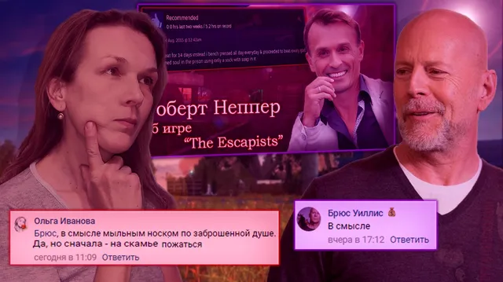

Ваши комментарии
ВКонтакте
🌺 Что ж, вторая неделя весеннего циклического периода подходит к своему заключит…
14 марта 2021 · оригинал во ВКонтакте ↗


🌺 Что ж, вторая неделя весеннего циклического периода подходит к своему заключительному этапу, а мы рады представить иллюстрации к лучшим комментариям за неделю!
🏆Титул Комментатора сегодня получают:
🌟 [id156445910|Никита Мальков]
🌟 [id315689770|Евгений Пышненко]
🌟 [id356181250|Ольга Иванова]
🌟 [id491132613|Брюс Уиллис]
===========================
>Всем спасибо, пишите больше.
#ВашиКомментарии@criticssteam - №35
> Предыдущий выпуск - [https://vk.com/wall-196461758_3683|тут]
🏆Титул Комментатора сегодня получают:
🌟 [id156445910|Никита Мальков]
🌟 [id315689770|Евгений Пышненко]
🌟 [id356181250|Ольга Иванова]
🌟 [id491132613|Брюс Уиллис]
===========================
>Всем спасибо, пишите больше.
#ВашиКомментарии@criticssteam - №35
> Предыдущий выпуск - [https://vk.com/wall-196461758_3683|тут]